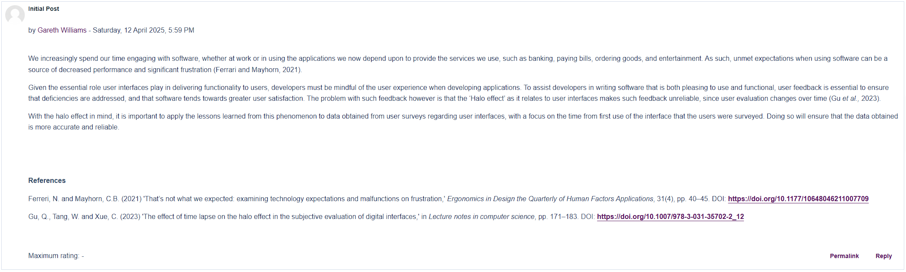

- Launching into Computer Science
- Object-oriented Programming
- Secure Software Development
- Research Methods and Professional Practice
- Software Engineering Project Management
Welcome to Software Engineering Project Management.
Here you will find artefacts and reflections from my studies of Software Engineering Project Management.
Unit 1
In this unit, we were introduced to the core concepts behind Project Management and were asked to contribute to a group discussion on the topic of why projects fail.
My contribution is shown below.
We were also each assigned to teams for the commencement of a group project in which we would be required to complete a report detailing a project development methodology to be used for the production of a hypothetical computer system. To facilitate collaboration, I created a WhatsApp group and Miro board - a workspace designed to allow multiple users to view and edit the same documents. I've attached a snippet of the board below.
Unit 2
In this unit, we continued to explore concepts relating to why projects fail and were asked to respond to peers' forum posts, which I've included below.
Unit 3
In this unit, we were asked to think about an online system we use on a daily basis which depends upon data structures. I've attached my thoughts below.
Unit 4
In unit 4, we were asked to create a summary post, summarising our group discussion relating to the reasons why projects fail. My response is attached below.
Unit 5
In this unit, we were introduced to the concept of the user experience and were asked to discuss how an understanding of human emotions can impact the reliability of user evaluation of user interfaces.
At this point, we were also entering the final phases of delivering our group project. I've attached the minutes of meets discussing our progress and priorities.
Unit 6
In this unit, we covered the idea of Python unit tests, specifically the 'PyTest' framework which allows developers to write tests to evaluate their own code.
To demonstrate its usage, we were set the task of running code against the PyTest framework; first to analyse its output when run with code that has no errors, then with code that was given a deliberate error. I've attached the outputs below.
The following output was the result of a PyTest run against code in which an assert statement was modified to produce an error. As expected, PyTest spots the error and provides feedback.
Unit 7
In this unit, we examined Software Developement Life Cycles and were asked to continue the discussion relating to the impact of human emotions on user feedback. I've attached my response below.

We were also set the task of writing an article discussing what our response to the emotional reactions of a customer may be. I've attached my response below.
Unit 8
In this unit, we explored Python data structures and were asked to list two such data structures to hold functional and non-functional data defined previously. My choices were as follows:
Unit 9
In this unit, we were introduced to the concept of Quality Management and were set a task of improving code we'd written previously by applying strategies discussed in required reading.
The code I've chosen to improve is a Python application I wrote for a previous module designed to read attack tree information from an XML file, and have attached a snippet of the code below.
The three improvements I chose to make to the code are as follows:
The improved code is attached below.